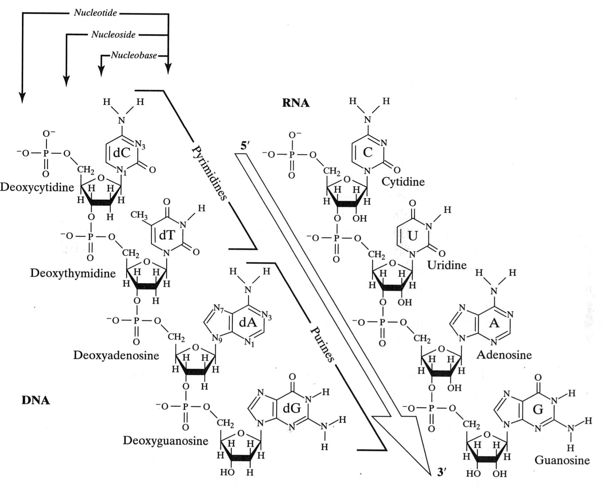
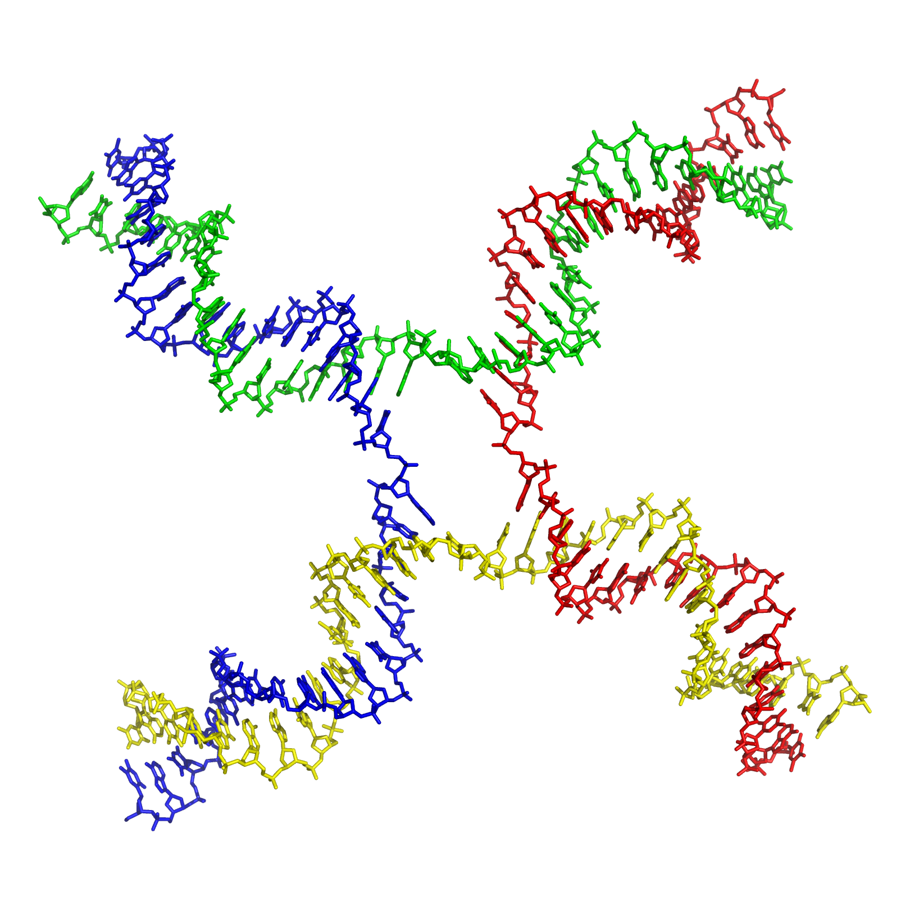

Nucleic Acid Structure
DNA was first macromolecular structure solved
Part of a protein diffraction pattern
BioCARS, U Chicago
Proteins
- 20 amino acids ($20^{L}$) leads to vast set of possible sequences.
- Have two degrees of backbone freedom ($\Phi$ and $\Psi$).
- 5(ish) pieces of secondary structure ($\alpha$-helix, $\beta$-sheet, $\pi$-helix, loop, turn)
- Folds heirarchically, giving $\approx 1000$ folds
Nucleic acids
- 4 bases ($4^{L}$) leads to slightly less vast set of possible sequences.
- Have 12 degrees of backbone freedom ($\alpha$,$\beta$,$\gamma$,$\delta$,$\varepsilon$,$\eta$,$\chi$,$\nu_{0}$,$\nu_{1}$,$\nu_{2}$,$\nu_{3}$,$\nu_{4}$)
- Bunch of low-order structures: B-form, A-form, Z-form, H-form helices; cruciforms; bubbles, hairpins
- Also folds heirarchically, giving who-knows-how-many folds
Nucleic Acids
van Holde, Curtis, Ho. Fig 1.35
Ridiculous numbers of bonds that can rotate
van Holde, Curtis, Ho. Fig 1.36
Sugar can "pucker"
van Holde, Curtis, Ho. Fig 1.37
Bases form standard "Watson-Crick" hydrogen bonds
van Holde, Curtis, Ho. Fig 1.38
But many other hydrogen bond patterns form
van Holde, Curtis, Ho. Fig 3.18
Base pairs orient in different ways relative to axis of strand
van Holde, Curtis, Ho. Fig 1.39
There are three basic classes of nucleic acid helix: A, B, and Z

mauroesguerroto, CC BY-SA 4.0, wikimedia.org
{kind=link}
What stabilizes a given nucleic acid structure?
- Hydrogen bonds
- Base stacking
- Electrostatics
Hydrogen bonding
G-C: $-10\ kJ\cdot mol^{-1}$
A-T: $-1\ kJ\cdot mol^{-1}$
van Holde, Curtis, Ho. p. 122Base stacking
van Holde, Curtis, Ho. Table 3.10
Electrostatics
- Positive ions offset negative charge on backbone
- Divalent ions (particularly magnesium) often play structural roles
Higher-ordered stuff
- Compact structures
- Super long DNA
- DNA origami
Roadkill diagrams show secondary structure
wikimedia.org
Stem-loop (a.k.a. hairpin)
wikimedia.org
{kind=link}
G-quadraplex
wikimedia.org
Flipping between secondary structures allows regulation
wikimedia.org
Holliday junctions occur in recombination

Secondary structure can assemble into tertiary structure
wikimedia.org
Secondary structure can assemble into tertiary structure
wikimedia.org
Ribozymes: catalytically active RNA molecules
wikimedia.org
Super long DNA: Chromatin

micro.magnet.fsu.edu
Super long DNA: NETosis
Super long DNA: Supercoiling

bioinfo.org.cn
Super long DNA: Persistence length
Measures how far you have to go until bending at one spot is not correlated with bending at another
- Cooked spaghetti: a few cm
- Dry spaghetti: $10^{18}\ m$
- DNA: $\approx 150\ bp$ ($~\approx 50 \ nm$)
Gives a rough estimate of how far along DNA two things can interact without binding to each other
DNA is now used as a programmable material
Hong et al. (2017) Chemi Rev 117:12584